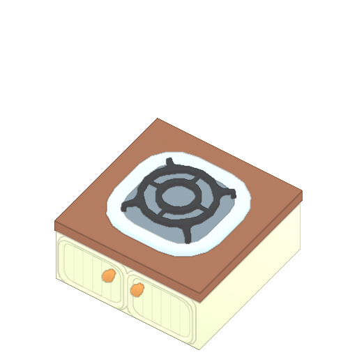

요리판

◾ 식품이 최종 "좋은" 조리 단계를 지나 기기에 방치하면 화상을 입을 수 있다.
◾ 버거 번과 버거 패티를 결합하는 것과 같이 접시 또는 다른 재료와 결합하면 음식이 타는 것을 막을 수 있다.
◾ 5%의 확률로 음식을 조리하는 동안 주변이 엉망이 된다.
◾ 요리사 Gas Override를 사용하면 더 빨리 연소된다.
◾ 요리사 가스 리미터를 사용하면 더 느리게 연소된다.
◾ 플레이어는 이 기기에 휴대할 수 있는 모든 항목을 놓을 수 있다.
◾ 플레이어는 이 기기에서 음식을 결합할 수 있다.
◾ 같은 방에 서빙 테이블의 2타일 범위 내에 배치하면 해당 테이블에 음식을 기다리는 중 있는 고객은 음식 대기 시간 지속 시간이 20% 감소한다.
◾ 캐비닛에 청사진을 넣고 연구데스크로와 상호작용을 한다면 안전 요리판과 위험한 요리판 둘 중 하나로 업그레이드 된다.